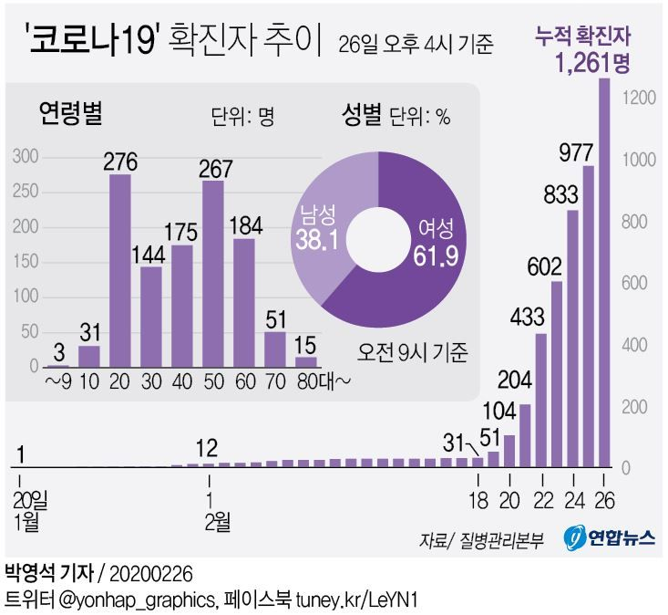
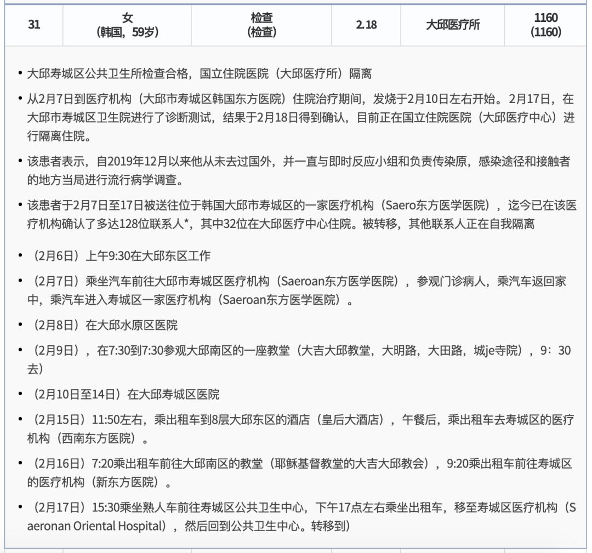

新冠确诊病例将破千，韩政府：全面禁止口罩出口
原文链接 备份链接 仁川国际机场。图片来源：Yonhap 记者：潘金花 “ 文在寅强调，“最大程度封锁”措施并非封堵和围困该地区，而是最大限度阻断疫情扩散，有关部门需争取使疫情拐点在本周之内到来。 ” 韩国中央防疫对策本部25日通报说，截 …


韩国1月20日发现首例确诊病例，此后一个月疫情发展缓慢，到2月18日确诊31例。2月19日后突然暴增，一周新增超过1200例。
18日确诊的第31号患者，被视为“超级传播者”。
韩国新冠疫情的一大特征是，在特定群体内出现了集中感染。新天地大邱教会和庆尚北道清道郡大南医院是重灾区。
新冠肺炎在韩国的致死率为1%左右，高于中国非湖北地区。
2月23日，韩国政府将新冠疫情预警级别上调至最高级别“严重”。2月25日，文在寅抵达大邱慰问一线抗疫人员和民众。

仅仅一周，韩国就成了中国之外最大的新冠肺炎疫情国。
据韩联社报道，截至2月26日下午4时，韩国当日新增284例感染新型冠状病毒（COVID-19）确诊病例，累计确诊1261例，死亡病例增至12例。

△ 图片来源：韩联社；由八点健闻汉化
其中大邱市和庆尚北道是主要疫区。作为韩国六个“广域市”之一的大邱市，以及作为八个“道”之一的庆尚北道，均属韩国一级行政区。
不止韩国，日本、意大利、伊朗等国也都呈现出感染人数在快速上升的趋势。
对于新冠病毒在境外的蔓延，流行病学和病毒学专家早有预警。2月9日，日本电视台NHK推出全球首部新冠病毒疫情纪录片——《疫情会扩大到何种程度，紧急报告新冠肺炎》中，片中主持人连线WHO传染病危机及管理高级顾问进藤奈邦子，她当时就表示，中国的管控让海外患者大幅减少，但成果预计只能保持到2月底。

而就在一周前的2月18日，韩国确诊病例数仅为31，也就是说，自韩国1月20日发现首例确诊病例后的一个月，疫情发展缓慢。其中11日至15日连续5天无新增感染者，一度让外界以为，韩国的疫情控住了。
 △ 图片来源：韩联社
为什么形势突然就变了？
超级传播者与新天地大邱教会
变化发生在2月19日。
当天，大邱市和庆尚北道地区出现大规模扩散和集体感染，此后的数据每日成倍增长。变化的关键就在于18日确诊的第31号患者，这位61岁（注：韩国卫生部官网信息显示其年龄为59岁，韩联社相关报道中均称是61岁）的韩国女性被视为病毒“超级传播者”。
该女性是新天地耶稣教会信徒，住院前后曾四次到大邱市一教堂做礼拜，共有1160位密切接触者。在19日当天韩国新增的20例确诊患者中，15例与其相关，多数曾与其去过同一个教堂。
新天地大邱教会信徒是此次韩国疫情中波及的主要群体，截至26日上午9时的统计数据，1146名确诊患者中，有501名与新天地大邱教会相关，占比达43.7%，此前更是一度超过50%。在目前的12例死亡病例中，3例与新天地大邱教会相关。
31号确诊患者居住在大邱市，2月7日首次出现发冷、咽喉痛等症状，乘坐汽车前往大邱市寿城区韩国东方医院住院治疗，2月10日左右开始出现发热症状。住院治疗期间，曾先后于9日和16日两次前往大邱南区的教堂做礼拜，并外出至酒店用餐。直至18日，经检测确诊为新冠病毒感染。鉴于病毒潜伏期最长为14天，防疫部门调查了该患者出现症状前参加的2次礼拜，加上住院期间的2次，共计4次。
 △ 新天地教会举行的礼拜活动；新天地教会官网宣传视频截图
△ 新天地教会举行的礼拜活动；新天地教会官网宣传视频截图
根据韩国卫生与服务部官网的公开信息，该患者自2019年12月以来没有海外旅行经历，也没有接触确诊患者，无法确认感染源和感染途径，仍在进一步展开流行病学调查。
 △ 截图自韩国卫生与服务部官网的公开信息，原文为韩文，此为网页直译版。
更早些时候，第31例病人有可能参加了吸引不少教徒到场的教主胞兄的葬礼。葬礼在庆尚北道清道郡大南医院于1月31日至2月2日进行。
清道大南医院：集中感染，7例死亡
韩国新冠疫情的一大特征是，在特定群体内出现了集中感染。除了新天地大邱教会，另一个重灾区是庆尚北道清道郡大南医院（简称“清道大南医院”），该院有精神病区，最初于2月19日出现2例确诊病例，截至26日上午的统计数据，累计113例确诊病例与清道大南医院有关，占比达9.9%。
清道大南医院位于庆尚北道清道郡，是一家主要针对老年疾病的综合医院，住院患者以老年人居多。该医院精神科住院楼栋多为多人间并采取封闭式管理，共102名住院病人，99人确诊。
在这次疫情中，清道大南医院成了重灾区，截至26日，12例死亡病例中，7例归入该院。

△ 图片来源：韩联社；由八点健闻汉化
最早在2月19日，该医院2位精神病房住院患者被确诊感染病毒，中央防疫对策本部随即对医院所有的患者和职员展开调查。当天上午，有109名患者和120名左右医院职员进行了痰液检测。因第31例患者曾在确诊前的2月初访问了清道郡，该院病例是否与其相关，也是当时韩国中央防疫对策本部的调查重点。
同一天，该院出现了全国首例死亡，该病例是一名63岁的韩国籍男性，此人在该院住院20多年，死于肺炎。卫生部门在病人死后对其实施病毒检测，结果呈阳性。
该院的第二例死亡，也就是韩国的第二例死亡，出现在21日下午。该病例为54岁女性，此前住在庆尚北道清道郡大南医院的精神病院，在被转入普通病房当天确诊感染病毒，并被救护车送往釜山大学医院。在转院后的下午5时左右，于治疗过程中身亡。
韩国九老医院感染内科教授金宇柱指出，大南医院的新冠病例多为住院多年的老弱患者且大多情况危重，死亡率在国内最高，这说明患者可能没有得到妥当治疗，有必要尽快采取措施，对患者进行重症分类，及时转至大学医院的负压病房接受专业治疗。
26日，中央应急处置本部副本部长金刚立表示，除7例死亡病例外，该院106例病例中已有25例转至其他医疗机构，其余患者由国立精神病院派遣的医务人员进行治疗。金刚立表示，政府目前正在研究重症患者转院方案，并已根据重症程度对患者进行分类，必要时将为其办理转院，但由于大多患者同时患有精神疾病，转院工作有一定难度。
根据韩联社26日的报道，与大南医院有关的新冠病例共113人，包括103名原住院患者、9名医务人员和1名患者家属，患者中101名发生在封闭式病栋。
而大南医院的集中死亡也直接拉升了新冠肺炎在韩国的致死率，韩国中央防疫对策本部长郑银敬26日表示，韩国境内感染新型冠状病毒的致死率为1%左右，死亡病例主要集中在高龄或有基础疾病的患者。而这一数据高于中国非湖北地区。
郑银敬解释称，一般情况下新冠病毒的致死率并不高，但在高龄或有糖尿病、心血管疾病患者中致死率较高。韩国之所以出现多例死亡病例是因为在疫情初期易感染群体聚集的清道大南医院发生集体感染。为了降低国内新冠病例的死亡率，政府将改善管理体系，在发病初期严格判断病情轻重程度，对病情较重的患者进行集中检查和治疗。
军队、总统府感染引发担忧
2月21日，韩军部队发现首例确诊病例。在济州海军部队工作的A某，他从13日开始到大邱休假，18日下午乘飞机返回济州并归队，20日因出现咳嗽等症状到医院筛查诊所接受病毒检测后重返部队。为防止疫情扩散，韩国国防部决定从22日起限制官兵休假、外出、外宿和探视，但退役前休假、丧假等特殊情况例外。
至23日中午，韩国海陆空部队均发现确诊病例，陆军4人、海军1人、空军1人，共计6人，均系营外感染。24日，这一数据上升至11人。
韩国国防部认为，一旦疫情在部队内扩散将导致局面无法掌控，因此军方采取扩大隔离范围等进一步升级的管控措施。截至23日，韩军共有7700余人被隔离，各军根据国防部的方针加强了管控措施。陆军、海军、空军、海军陆战队从2月10日起针对前往大邱、庆北地区休假或外出的官兵进行全面调查。
军队感染不仅发生在韩军内部，甚至波及了驻韩美军。
26日，韩国庆尚北道驻韩美军基地的一名美军士兵确诊感染新型冠状病毒。该士兵目前正在基地外的宿舍居家隔离，他21日起住在卡罗尔营，24日访问过位于大邱市的沃克营。
鉴于韩国大邱市和庆尚北道地区确诊病例骤增，驻韩美军19日将预警级别由低级（Low）上调到中级（Moderate），25日又上调到高级（High）。依据新的预警级别，美军将对一切进出部队的人流进行限制，除必需任务外，会议、集会、临时派遣都受限。美军还全面禁止官兵休假或因私外出，建议基地之间避免人员流动，但还没有将随军家属撤回本土的动向。
和军队感染一样，青瓦台内部如有感染也将是引发担忧的敏感事件。而类似的事件确实发生在了韩国总统文在寅身边。
2月25日，文在寅抵达大邱慰问一线抗疫人员和民众，并主持召开新型冠状病毒疫情对策会议，他表示，本周必须看到遏制病毒的转折点。
会议上，文在寅和团队一起为患病和逝去的民众祷告默哀。当时他不知道的是，出席会议的大邱市经济副市长的秘书会是确诊病例，因为那时该秘书的检测结果尚未出炉。
得知该消息后，青瓦台建议当时出席会议的相关人士和媒体记者实施7天的居家隔离。隔离期间若出现发烧、呼吸道疾病症状，需拨打疾病管理本部紧急热线电话（1339）或辖区卫生站后按照指示前往筛查诊所接受检查。
整体来说，韩国政府层面防控及时，但还是面临着诸多来自市民和信徒的挑战，比如市中心集会。
韩国政府自1月20日发现首例确诊患者后，将新冠疫情预警级别从“关注”上调至“注意”级别，之后再次上调至“警惕”级别，至2月23日上调至最高级别“严重”。
根据韩联社报道，韩国传染病预警级从低到高分为四个阶段，分别是关注、注意、警惕、严重。这是韩国政府继2009年甲型H1N1流感后时隔11年再次发布最高级别的传染病预警。在发布“严重”预警之后，政府可采取最高级别的应对措施，包括下令各级学校关闭、禁止集体活动等。
_
2月16日（确诊29例，死亡0例）
韩国国务总理丁世均指示卫生部门强化社区防控体系。
当天确诊的第29例新冠病毒感染病例近期不曾访华也未接触过确诊病例，由此引发疫情或已经扩散到社区的忧虑。
_
2月17日（确诊30例，死亡0例）
新冠病毒感染症纳入“重症急性呼吸系统传染病监管体系”；同时列入“流感和呼吸道病毒性病原体感染症监控体系”，像季节性流感一样随时实施监控检查，该体系目前共检测8种病毒。
扩大新冠病毒的检测范围，构建社区和医疗机构监测体系。
_
2月18日（确诊31例，死亡0例）
_
2月19日（确诊51例，死亡0例）
自武汉入韩人员行踪已全数查明。
大邱一教堂发生新冠病毒超级传播事件。
中央应急处置本部总负责人卢洪仁：在大邱和庆北地区，社区传播实际上已经开始，政府有必要全面修改防疫对策。轻症患者应尽可能在家休息观察病情。
专家们认为国内也已全面出现社区感染。
分散包括卫生站在内的所有医疗机构的职能，建立以医疗机构为中心的全方位防疫体系，以提高防疫效率。另设让有呼吸道患者放心就医的门诊。卫生部门正在协商改组医疗系统，让卫生站负责进行筛查诊疗，公共医院负责轻症的住院患者，定点隔离医院和上级医院负责重症病人。
_
2月20日（确诊104例，死亡1例）
韩政府表示疫情已从海外流入，进入社区传播阶段。
大邱新设8个病毒筛查诊所，并再安排24名公共卫生医师。
病床紧缺，防疫部门正在考虑与地方政府协商，将患者移送至周边地区医疗机构的方案。
发布疫情应对指南第六版，扩大新冠病毒检测对象范围；重新定义疑似病例。
提高密接者解除隔离标准，隔离第13天需接收病毒检测，结果呈阴性才可解除隔离。
韩国国会保健福祉委员会表决通过了旨在应对新冠病毒（COVID-19）疫情的三项法案，具体包括《关于预防及管理传染病法律》《检疫法》《医疗法》的修订案。
韩防疫部门对发生超级传播教会千余教徒实施居家隔离。
_
2月21日（确诊204例，死亡2例）
韩国拟将大邱市和庆北清道郡指定为疫情重点管理区。
韩军部队出现首例确诊患者，韩军为防控疫情明起限制官兵外出休假。
首尔市决定暂时禁止在光化门广场、首尔广场和清溪广场举行集会，新天地教会设于首尔的设施将从当天起关闭。
彻查参加新天地大邱教会礼拜和庆尚北道清道郡大南医院葬礼的人员。
韩青瓦台因新冠疫情考虑暂停对外开放参观。
_
2月22日（确诊433例，死亡3例）
_
2月23日（确诊602例，死亡6例）
韩军升级管控措施严防新冠病毒营内传播。
韩国将新冠疫情预警级别上调至最高级别“严重”。
韩外长康京和会见世卫组织总干事谭德塞讨论合作防疫。
防疫部门每日新冠病毒的检测量达到5000至6000份，并争取当天完成检测，最晚不超过24小时。截至目前，韩国共有2.2万余人接受新冠病毒检测，其中1.6038万人检测结果呈阴性，6039人的结果还未出炉。
_
2月24日（确诊833例，死亡8例）
韩国釜山一疗养医院因出现确诊病例被封。
韩卫生部门：新冠死者将先火化后殡葬。
韩政府认为抓社区防控是新冠防疫重中之重。
防控调整方向：加大对轻症病例的排查力度，防范疫情扩散；针对确诊患者专门建立诊疗体系，有效治疗并减轻肺功能损伤的问题；确保与新冠疫情无关的其他患者也能接受有效治疗。政府认为以流行病学调查和隔离接触人员为主展开防疫防控工作仍然有效。
_
2月25日（确诊977例，死亡10例）
韩政府将对新天地教会全信徒进行新冠检测，政府强调若新天地方面不积极配合政府防疫，只能采取法律手段。
韩国党政青拟对大邱庆北采取超强防控措施，将大邱和庆北两地划为特别管控区，采取超强“封锁措施”力阻疫情蔓延。“最大程度封锁”意味着补强织密防疫网，阻断疫情在社区扩散，并不是说要完全“封市封道”禁止出入。
自中国大陆和港澳地区入境者需走专用通道，并安装自我诊断APP。目前八成自华入境者安装自我诊断APP。
韩政府明起限制口罩出口解决紧缺问题。
_
2月26日（确诊1261例，死亡12例）
首尔地方警厅通告一社团勿在市中心集会。
韩国政府建议民众暂停聚集性活动，主办方在考虑紧迫性、疫情传播可能性、与会者的感染风险等因素后可推迟或取消大型活动；与会者超过1000人以上时必须制定应对方案并向地方政府申报，而地方政府可根据防控难度要求主办方弥补应对方案或取消活动。
韩国国会表决通过三项有关防疫的修订法案。
韩国天主教会因疫情暂停所有弥撒。
吴晔婷|撰稿
微信号：wytlucky19
王吉陆|责编
微信号：wangjilu006

我们尊重原创版权，未经允许请勿转载。
授权转载
郑琪 微信号: 1281949389
商务合作
上海：leslee 13916263824
北京：Jessie 13911125922
线索爆料、意见反馈，加入核心读者社群
请扫码联系健闻君

让朋友们看到你也在看
↓↓↓
健闻吴晔婷
长按二维码向我转账
受苹果公司新规定影响，微信 iOS 版的赞赏功能被关闭，可通过二维码转账支持公众号。
原文链接 备份链接 仁川国际机场。图片来源：Yonhap 记者：潘金花 “ 文在寅强调，“最大程度封锁”措施并非封堵和围困该地区，而是最大限度阻断疫情扩散，有关部门需争取使疫情拐点在本周之内到来。 ” 韩国中央防疫对策本部25日通报说，截 …
原文链接 备份链接 IMF认为，若一切向好的方向发展，中国经济有望从二季度开始恢复正常。近日个别国家和地区确诊病例激增，确诊首例新冠病毒感染病例的国家和地区也在增加，是新感染群体的感染源越来越难以查明？还是疫情传播到了某个新的临界点？ …
原文链接 备份链接 目前包括中国大陆在内，全球已经有41个国家和地区出现了疫情，其中，韩国是中国大陆之外疫情蔓延最快的国家。 尽管如此，世卫组织不希望在“没有谨慎和清晰地分析事实情况之前”仓促宣布疫情为全球“大流行病” 文 |《财经》特派 …
原文链接 备份链接 目前，伊朗是中东地区确诊病例最多的国家。截至27日，伊朗共确诊245例新冠病毒感染病例，其中26例死亡，25例治愈出院。 全文3274字，阅读约需6.5分钟 截至27日，全球除南极洲外的六大洲都出现了新冠病毒感染病 …
原文链接 备份链接 截至目前，巴西确诊拉丁美洲首例新冠肺炎病例。疫情正在从意大利向国外蔓延，周边邻国瑞士、奥地利相继出现首例确诊病例，西班牙新增一例确诊病例，确诊患者均与意大利有关。 截至25日，中东有新冠肺炎确诊病例的国家已增至9个： …